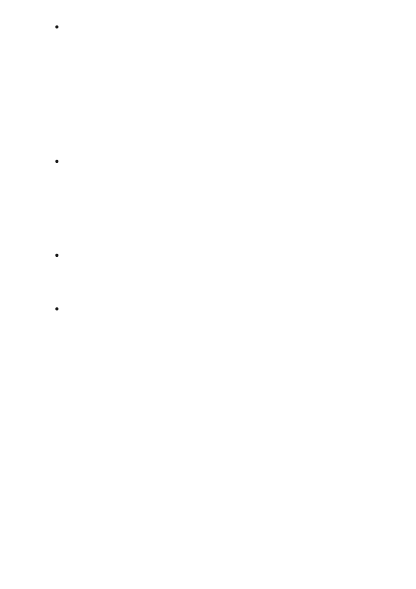

Inappropriate or offensive content: These models can produce other types of
inappropriate or offensive content. Examples include the ability to create images
that potentially contain harmful artifacts such as hate symbols; images that illicit
harmful connotations; images that relate to contested, controversial, or
ideologically polarizing topics; images that are manipulative; images that contain
sexually charged content that isn't caught by sexual-related content filters; and
images that relate to sensitive or emotionally charged topics. For example, a well-
intentioned text prompt aimed to create an image of the New York skyline with
clouds and airplanes flying over it might unintentionally generate images that illicit
sentiments related to the events surrounding 9/11.
Disinformation and misinformation about sensitive topics: Because DALL·E 2 is a
powerful image generation model, it can be used to produce disinformation and
misinformation that can be extremely harmful. For example, the model might
generate an image of a political leader engaging in activity of a violent or sexual
(or simply inaccurate) nature that might lead to defamation and other
consequential harms, including but not limited to public protests, political change,
or fake news.
Information reliability: Language model responses can fabricate content that may
sound reasonable but is nonsensical or inaccurate with respect to external
validation sources. Even when drawing responses from trusted source information,
responses may misrepresent that content.
False information: Azure OpenAI doesn't fact-check or verify content that is
provided by customers or users. Depending on how you've developed your
application, it might produce false information unless you've built in mitigations
(see Best practices for improving system performance below).
In many AI systems, performance is often defined in relation to accuracy—that is, how
often the AI system offers a correct prediction or output. With large-scale natural
language models and image models, two different users might look at the same output
and have different opinions of how useful or relevant it is, which means that
performance for these systems must be defined more flexibly. Here, we broadly consider
performance to mean that the application performs as you and your users expect,
including not generating harmful outputs.
Azure OpenAI service can support a wide range of applications like search, classification,
code generation, and image generation, each with different performance metrics and
mitigation strategies. There are several steps you can take to mitigate some of the
concerns listed under "Limitations" and to improve performance. Other important
System performance